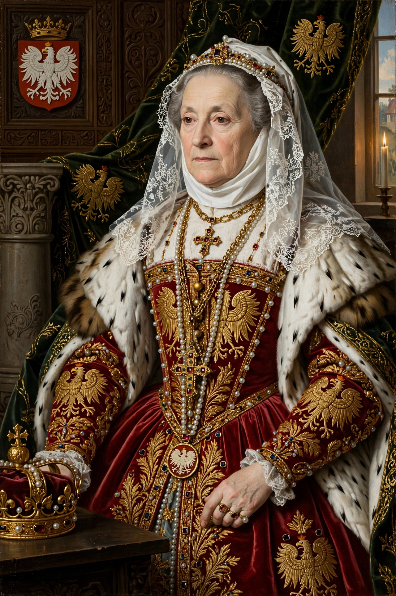

Anna Jagiellon (Polish: Anna Jagiellonka; 18 October 1523 – 9 September 1596) was Queen of Poland and Grand Duchess of Lithuania from 1575 to 1587, as co-ruler with her husband Stephen Báthory. The daughter of Sigismund I the Old and Bona Sforza, she was the last member of the Jagiellonian dynasty to sit on the Polish throne.
| Anna Jagiellon | |
|---|---|
| Reign | 13 December 1575 – 19 August 1587 |
| Born | 18 October 1523, Kraków, Poland |
| Died | 9 September 1596 (aged 72), Warsaw, Poland |
| Spouse | Stephen Báthory |
| Dynasty | Jagiellon |
Anna remained unmarried for most of her life, living in the shadow of her brother, King Sigismund II Augustus, the last male Jagiellon. After the extinction of the male line (1572) and the flight of the elected king Henry of Valois (1574), the nobility elected Anna as king in her own right in December 1575 — she was styled rex, not merely queen consort — with the Transylvanian prince Stephen Báthory chosen as her husband and co-ruler.
Báthory conducted the government and wars of the reign, including campaigns against Muscovy, while Anna maintained her court, developed Warsaw's royal residences and defended her rights and revenues. Widowed in 1586, she supported the election of her nephew Sigismund III Vasa in 1587, retiring from power but remaining an influential dynastic figure until her death in 1596. She is buried in Wawel Cathedral, Kraków.
Anna Jagiellon — recreated from memory.